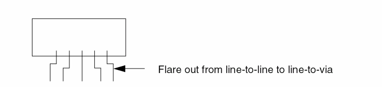

Design IO, Corner Cells, and Blocks
IO、角单元与模块设计
Abstract Generator uses the cover blockage model for IO cells, preventing the router from routing over IO cells.
Abstract Generator 对 IO 单元使用 cover blockage 模型，阻止路由器在 IO 单元上方布线。
Abstract Generator uses the same model for generating abstracts for corner cells.
Abstract Generator 在为角单元生成 abstract 时也使用相同的模型。
-
Maximize porosity for over-the-block routing.
Leave unobstructed areas for over-the-block routing. Minimize the number of M2 and M3 geometries inside the block, so that these routing resources can be used to route over the block.
为跨模块布线（over-the-block routing）最大化孔隙率。
为跨模块布线保留不受阻挡的区域。尽量减少模块内部的 M2/M3 几何数量，使这些布线资源可以用于在模块上方布线。 -
Create power rings around large macro blocks.
It might be easier to accommodate power routing around a macro block if you create a power ring around it and connect the internal buses to the ring.
在大型宏模块周围创建电源环（power ring）。
如果在宏模块周围创建电源环并将内部电源总线连接到该电源环，通常更容易在宏模块周边安排电源布线。 -
Pad around block boundaries.
It is always good to have extra routing resources around a block, because this area can get congested. Leave extra room around the corners.
在模块边界周围增加 padding。
模块周围区域可能出现拥塞，因此为其预留额外布线资源通常是有益的；尤其要在拐角附近留出更多空间。 -
Create as much open vertical M2 space as possible on the left and right sides.
在左右两侧尽可能保留更多开放的垂直 M2 空间。 -
Create as much open M1 and M3 space as possible on the top and bottom.
在上下两侧尽可能保留更多开放的 M1 与 M3 空间。 -
Space pins apart by at least line-to-via spacing.
If your design requires line-to-line spacing, add flare outs to line-to-via spacing even if this sticks out from the macro, as shown in the following figure.

引脚间距至少满足 line-to-via spacing。
如果设计要求 line-to-line spacing，可将引脚形状扩展（flare out）到 line-to-via spacing，即使扩展部分会超出宏模块边界，如下图所示。
Related Topics
相关主题
Guidelines for Designing a Cell Library
Return to top